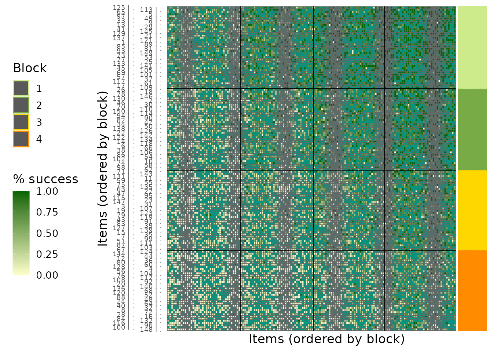

Getting started with BTSBM
Lapo Santi
2025-10-22
Source:vignettes/getting-started.Rmd
getting-started.RmdOverview
This vignette replicates the spirit of a larger simulation pipeline, but focuses on a single value of K and a single dataset to keep things simple and fast
-simulate a sparse paired-comparison topology,
-simulate latent blocks and block rates,
-generate win counts
-run the clustered Gibbs sampler (gibbs_bt_sbm),
-relabel and summarize (inference_helper),
-compare the inferred partition to truth via VI distance.
set.seed(12)
# 2.1 Sparse-ish match topology
sample_Nij <- function(n_players, mean_matches = 10, p_edge = 0.5) {
N <- matrix(0L, n_players, n_players)
pairs <- utils::combn(n_players, 2)
m <- ncol(pairs)
keep <- which(runif(m) < p_edge)
for (k in keep) {
i <- pairs[1, k]; j <- pairs[2, k]
n_ij <- rpois(1, mean_matches)
if (n_ij > 0L) { N[i, j] <- N[j, i] <- n_ij }
}
diag(N) <- 0L
N
}
n <- 150
N_sim <- sample_Nij(n, mean_matches = 5, p_edge = 0.5)
K=4
x_star <- rep(1:K,length.out=n)
lambda_to_theta = function(lambda){
outer(lambda, lambda, function(a, b) a / (a + b))
}
make_lambda_geometric <- function(K, base=1, ratio=2.3) base * ratio^(0:(K-1))
lambda_star <- make_lambda_geometric(K, base=0.08, ratio=2.3)
theta_star <- lambda_to_theta(rev(lambda_star))
theta_star#> [,1] [,2] [,3] [,4]
#> [1,] 0.50000000 0.6969697 0.8410175 0.9240526
#> [2,] 0.30303030 0.5000000 0.6969697 0.8410175
#> [3,] 0.15898251 0.3030303 0.5000000 0.6969697
#> [4,] 0.07594744 0.1589825 0.3030303 0.5000000
# ---- generate outcome counts ----
w_ij <- matrix(0L, n, n)
idx <- which(upper.tri(N_sim) & N_sim > 0L, arr.ind = TRUE)
for (krow in seq_len(nrow(idx))) {
i <- idx[krow, 1]; j <- idx[krow, 2]
nij <- N_sim[i, j]
pij <- theta_star[x_star[i], x_star[j]]
wij <- rbinom(1, nij, pij)
w_ij[i, j] <- wij
w_ij[j, i] <- nij - wij
}- Run the clustered Gibbs sampler (short chain)
T_iter = 4000
T_burn = 1000
out <- BTSBM::gibbs_bt_sbm(
w_ij = w_ij,
a = 4,
prior = "GN", # "DP", "PY", "DM", or "GN"
gamma_GN = 0.8,
T_iter = T_iter,
T_burn = T_burn,
verbose = T
)#> iter 1000 occupied = 4
#> iter 2000 occupied = 4
#> iter 3000 occupied = 4
#> iter 4000 occupied = 4- Relabel and summarize
library(dplyr)
library(ggplot2)
post <- BTSBM::relabel_by_lambda(out$x_samples, out$lambda_samples)
as.data.frame(table(post$n_clusters_each_iter[(T_burn + 1):T_iter])) %>%
rename(K = Var1, count = Freq) %>%
mutate(
K = as.integer(as.character(K)),
prob = count / sum(count)
) %>%
ggplot(aes(x = K, y = prob)) +
geom_col() +
theme_minimal() +
labs(
x = "K",
y = expression(Pr(K==k ~ "|" ~ W)),
title = "Posterior distribution of K"
)- Compare partitions to truth (VI distance)
We compute VI distances for the minVI and Binder partitions against the true labels z_star.
point_estimate_VI = post$partition_binder
mcclust::arandi(point_estimate_VI, x_star)#> [1] 1- Plot reordered adjacency matrix
plot_block_adjacency(fit = post,
w_ij = w_ij)
- Plot assignment uncertainty
plot_assignment_probabilities(fit = post, w_ij = w_ij)
- Plot lambda uncertainty
plot_lambda_uncertainty(fit = post, w_ij = w_ij, clean_fun = clean_players_names)